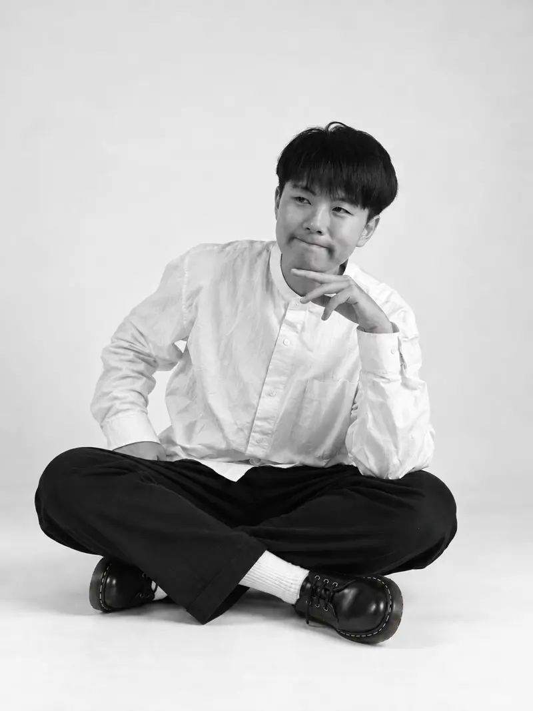

Yuan Chi Chang
PRODUCT MANAGEMENT × UX
Product Designer / B2B SaaS
Taipei · chi861008@gmail.com

PROFILE
I am a UX Researcher / Product Designer focused on B2B SaaS, developing into a Product Builder and Product Manager with both design and development skills.
I have worked on restaurant POS systems, self-ordering kiosks, cloud reporting tools, and kitchen display systems. Outside work, I enjoy starting side projects inspired by real problems in everyday life, putting research, design, and development into practice beyond the workplace.
SELECTED PRODUCT EXPERIENCE | PROTECH
Customer Display System
Combined field observations, competitive research and product requirements to inform priority segments and checkout display design.
Kitchen Display System
Contributed to user research and design decisions involving stations, alerts, information density and error tolerance.
Self-ordering Kiosk
Participated in usability testing, analysis and prototypes for combo selection, add-ons and payment guidance.
INDEPENDENT WORK
My AI Workflow
Built custom GPT, Skills and a research repository for Quote extraction, editable Figma affinity maps and knowledge management.
Quotes: ~1 day → 30 min | Figma: half day → 5 min | Repository: ~1 hour → 5 min
Pilates Scheduling System
Researched instructor scheduling needs, defined business rules and independently built and deployed the product.